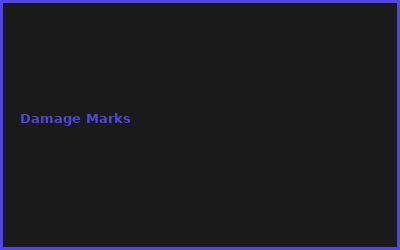
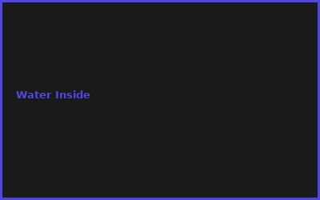

Kapitel 1: Screen Cleaning Importance
- Dust reduction = better viewing
- Oil/fingerprint removal
- Display longevity
- Hygiene improvement
Kapitel 2: DIY Kit Components
# DIY Screen Cleaning Kit
# Microfiber cloths €1
# Distilled water €1
# Isopropyl alcohol €0.50
# Small spray bottle €0.50
# Storage case €0 (use old box)
# Total: €3 complete kit
Kapitel 3: Cleaning Solutions
- Distilled water only (safest)
- 1:1 water + isopropyl mix
- No harsh chemicals
- pH neutral requirement
Kapitel 4: Proper Technique
- Spray on cloth, not screen
- Gentle circular motion
- Avoid pressure on display
- Let dry naturally
Kapitel 5: Multi-Device Cleaning
- Monitor cleaning
- Phone/tablet safe
- Laptop screen care
- TV-safe solutions
Kapitel 6: Maintenance Schedule
- Weekly light dust
- Monthly thorough clean
- Quarterly deep care
- After-use habit
💡 PRO-TIPPS
🎯 Tipp: Spray auf Tuch, nicht Display!
Problem: Flüssigkeit kriecht in Slots | Lösung: Cloth first, dann spray
💰 BUDGET-HACKS (96% SPAREN!)
💰 Hack: DIY vs. Premium Kit
Original: Premium cleaning kit: €80+ | Hack: DIY kit: €3 | Einsparnis: 96%
⚠️ FEHLER
❌ Fehler: Harsh Chemicals verwenden
Was passiert: Display beschädigung | ✅ Lösung: Nur Wasser + mild isopropyl
🌐 COMMUNITY
r/lifehacks, Cleaning Tips Forum, Tech Maintenance Community, DIY Care Groups
📸 Fehler-Galerie

